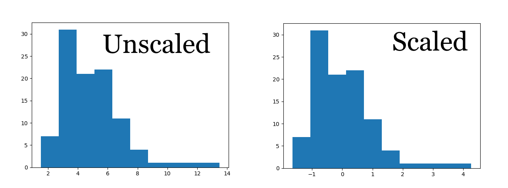

Scaling
We saw before that the support vector machine method worked reasonably well, but was not an outstanding learner. Applying a scaling transformation to the data might help, in order to prevent features with large variation dominating those that vary little, even if small variations in that feature are actually significant. For example, Hastie et al. advise scaling when using neural network models in [1, § 11.5.3].
Scaling the features will also mean that, in principle, the coefficients of a linear model should tell us roughly how important each feature is. There are various ways of scaling the data, but we will use scikit-learn's StandardScaler which centres the data (in other words, makes the mean zero) and scales by a constant in order to give each feature a variance of one.

The above histogram shows an example of using StandardScaler on some random data generated from a distribution. Notice that the mean in the scaled data is now zero, and although the density appears similar, the variance is also much lower.
[1] Trevor Hastie et al. The Elements of Statistical Learning: Data Mining, Inference and Prediction. 1st ed. Springer, New York, NY. (2001)
Support Vector Machines on Scaled Data
from sklearn.svm import SVC
from sklearn.model_selection import StratifiedKFold
from sklearn.metrics import average_precision_score, precision_recall_curve
from sklearn.pipeline import Pipeline
from sklearn.preprocessing import StandardScaler
from util import load_data, get_confidence
classifier = SVC()
X, y = load_data()
pipeline = Pipeline([
('scaler', StandardScaler()),
('clf', classifier)
])
k_fold = StratifiedKFold(n_splits=5, shuffle=True, random_state=0)
print('Average precision score ')
print('-------------')
print('Fold Score')
for i, (train_index, test_index) in enumerate(k_fold.split(X, y)):
X_train, X_test = X.iloc[train_index, :], X.iloc[test_index, :]
y_train, y_test = y[train_index], y[test_index]
pipeline.fit(X_train, y_train)
y_score = get_confidence(pipeline, X_test)
print(f'{i + 1:<6} {average_precision_score(y_test, y_score):.3f}')
print()
Output
Average precision score
-------------
Fold Score
1 0.785
2 0.839
3 0.835
4 0.843
5 0.799
While the support vector machine still doesn't beat the random forest baseline model, it is a great improvement from before, where the area under the precision–recall curve was as poor as 0.561 on fold 4.
K Nearest Neighbours on Scaled Data
from sklearn.model_selection import StratifiedKFold
from sklearn.neighbors import KNeighborsClassifier
from sklearn.metrics import average_precision_score, precision_recall_curve
from sklearn.pipeline import Pipeline
from sklearn.preprocessing import StandardScaler
from util import load_data, get_confidence
X, y = load_data()
pipeline = Pipeline([
('scaler', StandardScaler()),
('clf', KNeighborsClassifier())
])
k_fold = StratifiedKFold(n_splits=5, shuffle=True, random_state=0)
print('Average precision score ')
print('-------------')
print('Fold Score')
for i, (train_index, test_index) in enumerate(k_fold.split(X, y)):
X_train, X_test = X.iloc[train_index, :], X.iloc[test_index, :]
y_train, y_test = y[train_index], y[test_index]
pipeline.fit(X_train, y_train)
y_score = get_confidence(pipeline, X_test)
print(f'{i + 1:<6} {average_precision_score(y_test, y_score):.3f}')
print()
Output
Average precision score
-------------
Fold Score
1 0.781
2 0.828
3 0.839
4 0.814
5 0.808
The K Nearest Neighbours model produces another model with performance comparable to the support vector machine model above. For comparison, without scaling the model performs extremely poorly, and achieves a score of 0.137 on fold 1. Therefore, we can see that scaling makes a very significant difference for many models.
An idea that we will explore later is whether we can combine these different models to construct a more powerful learner.
Neural Networks on Scaled Data
from sklearn.neural_network import MLPClassifier
from sklearn.model_selection import StratifiedKFold
from sklearn.metrics import average_precision_score, precision_recall_curve
from sklearn.pipeline import Pipeline
from sklearn.preprocessing import StandardScaler
from util import load_data, get_confidence
classifier = MLPClassifier(hidden_layer_sizes=(10,), alpha=0.001, random_state=2)
X, y = load_data()
pipeline = Pipeline([
('scaler', StandardScaler()),
('clf', classifier)
])
k_fold = StratifiedKFold(n_splits=5, shuffle=True, random_state=0)
print('Average precision score ')
print('-------------')
print('Fold Score')
for i, (train_index, test_index) in enumerate(k_fold.split(X, y)):
X_train, X_test = X.iloc[train_index, :], X.iloc[test_index, :]
y_train, y_test = y[train_index], y[test_index]
pipeline.fit(X_train, y_train)
y_score = get_confidence(pipeline, X_test)
print(f'{i + 1:<6} {average_precision_score(y_test, y_score):.3f}')
print()
Output
Average precision score
-------------
Fold Score
1 0.788
2 0.868
3 0.856
4 0.836
5 0.846
This classifier using the multi-layer perceptron has performed well on all folds, and gives the best average precision score on fold 2 of all the classifiers we've seen so far. However, some caution must be exercised. The model appears to be fairly sensitive to the initial random state we choose. Here are the results with random_state=1:
Average precision score
-------------
Fold Score
1 0.777
2 0.860
3 0.834
4 0.823
5 0.854
Later, we will discuss regularisation which can, among other things, be used to try and reduce the variance of the model.